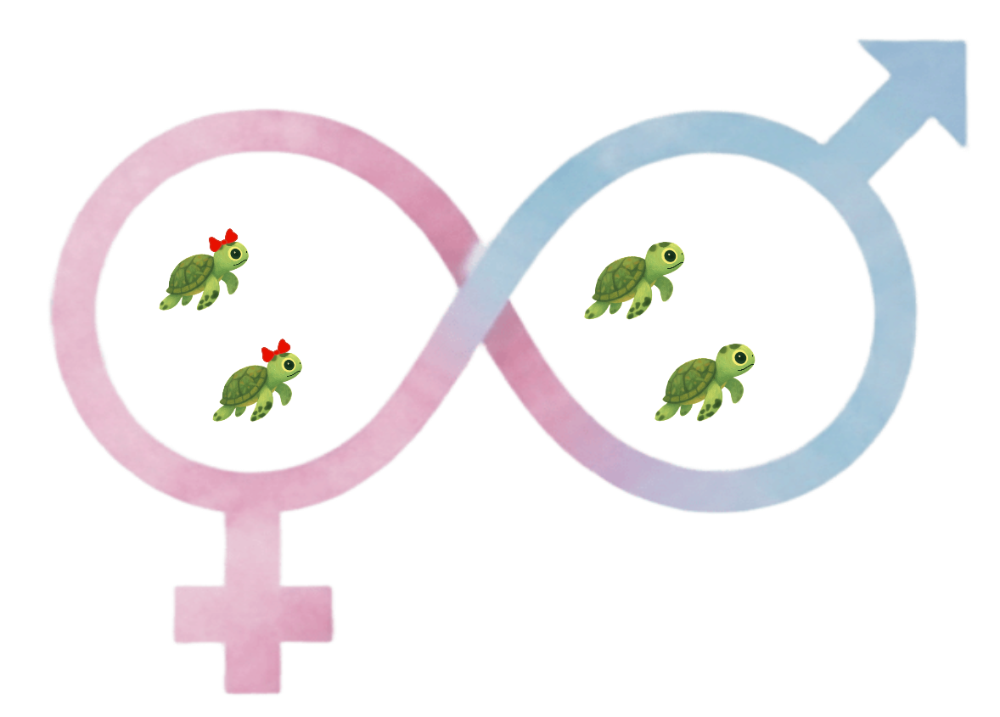
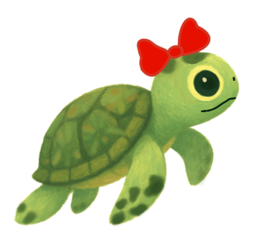
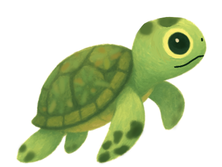

台灣食用海龜蛋的歷史
台灣過去確實有食用海龜蛋的歷史，特別是在物資匱乏的年代，海龜蛋被視為珍貴的蛋白質來源。例如，澎湖地區的居民早年會食用海龜肉和蛋，並將海龜視為祈求平安的象徵。然而，隨著保育意識的提升，這些習俗已逐漸被取代。
馬來西亞與台灣的食用習俗
馬來西亞對於食用海龜蛋的法律規定並不統一，部分地區合法食用。
此外，根據當地耆老的回憶，約20多年前，台灣某些地區仍有居民挖掘並食用海龜蛋，甚至有孩童會挖龜蛋玩耍。這些行為在當時並不罕見，但隨著保育法規的實施和教育的推廣，已逐漸減少。